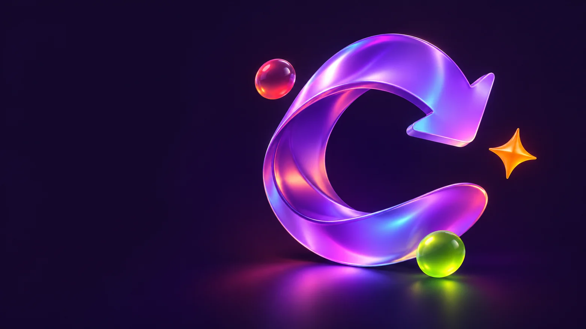

Atividade ao longo do ano
Registros com data encontrados no arquivo.

Veja o que você curtiu, salvou, assistiu e publicou. Importe seus dados e descubra o que ficou registrado sobre o seu ano.
Comece pelo lugar onde você mais passou tempo.
Integrações em fase beta. Você não precisa conectar contas nem informar senhas. Todos os resultados dependem das informações disponíveis na exportação.
Escolha os dados, exporte e abra sua retrospectiva.
Seus dados continuam nesta aba. Você pode assistir de novo, explorar as estatísticas ou escolher outro arquivo.
Cada plataforma tem suas próprias instruções. Escolha somente os dados necessários.
Siga os passos abaixo no aplicativo escolhido.
Os nomes podem variar conforme o aplicativo e a região. Marque somente o que encontrar.
Selecione abaixo o ZIP ou JSON da sua rede social. A análise acontece no seu aparelho, sem enviar seus dados para um servidor.
A análise pode demorar um pouco se o arquivo for muito grande.
Importe os dados do Instagram. A análise acontece no seu aparelho.
Ou selecione arquivos .zip, .json ou .csv (Reddit)
Os números são só o começo. Cada dado encontrado vira uma pequena história que merece ser vista. Você escolhe o que compartilhar.
Likes, salvos e interações — os rastros das coisas que te fizeram parar.
CURTIDAS E REAÇÕESFavoritos que você escolheu guardar.
Seus dias e horários mais movimentados.
Vídeos, posts, comentários, descobertas — tudo depende do que sua rede permite exportar.
A análise dos arquivos acontece no seu navegador. Não usamos servidor para ler seu ZIP, não pedimos acesso à conta e não armazenamos suas atividades. Os resultados dependem dos registros presentes na exportação.
O projeto é gratuito. Se gostar, você pode contribuir via Pix. Isso é totalmente opcional.
O desenvolvedor ainda não configurou a chave Pix.
Seus comentários
Somente os textos encontrados no arquivo deste aplicativo e ano.